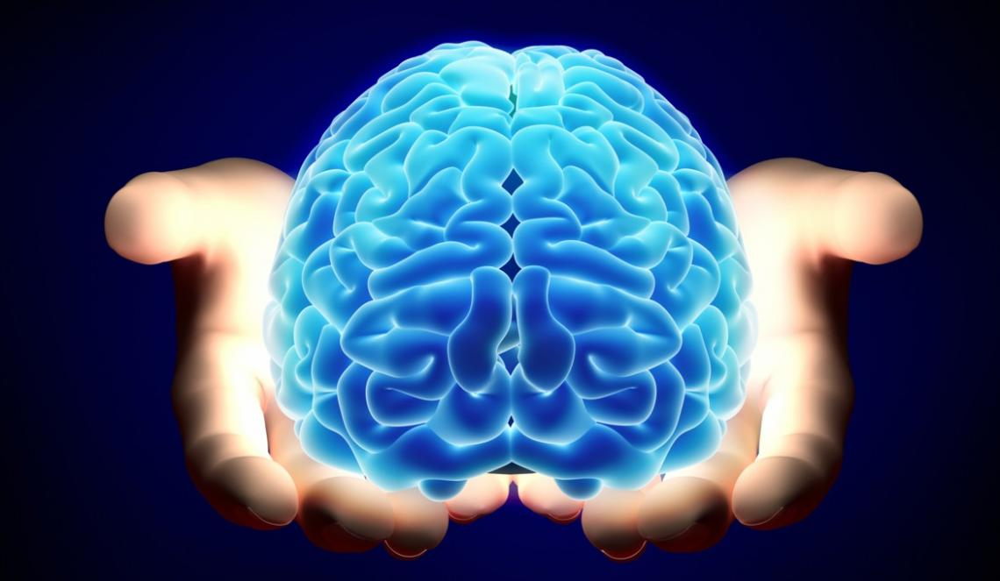

Una vez definido, una pregunta interesante nos surge: ¿qué redes cerebrales son importantes para el pensamiento creativo? Un bonito artículo publicado recientemente en Trends in Cognitive Neuroscience (2016) resume los hallazgos científicos sobre esta cuestión, proponiendo que en el pensamiento creativo participan distintas redes de procesamiento de la información colaborando entre sí en el proceso de creación de ideas y evaluación de las mismas.
©shutterstock
Roger E. Beaty, del Departamento de Psicología de la University of North Carolina en Greensboro, y otros investigadores realizan un repaso de los descubrimientos sobre redes cerebrales colaboradoras en el pensamiento creativo. Al parecer hay dos redes importantes: la red neuronal por defecto y la red de control cognitivo.
La primera se muestra más activa cuando no hay tareas cognitivas externa, mientras que la segunda se activa más cuando se ha de dirigir la atención hacia estímulos externos, como sucede con tareas de memoria de trabajo.Pero lo más importante, es que, según describen los autores, ambas parecen colaborar en la generación de pensamiento creativo.Su propuesta, basada en los hallazgos de otras investigaciones, plantea que la red por defecto participaría en la generación de ideas novedosas y la red de control cognitivo sería la responsable de la evaluación de dichas ideas y su modificación.
Revisando los trabajos previos, parece que estas redes se activarían de forma conjunta en tareas de pensamiento divergente, como por ejemplo cuando se pide a alguien que genere diferentes usos para un mismo objeto, cuando pedimos a músicos que hagan improvisación musical para generar ciertas emociones, o cuando se pide a poetas profesionales que escriban versos y los revisen.
Al parecer, un hallazgo común es que la red por defecto (áreas parietales posteriores inferiores y medias) y la red de control cognitivo (áreas prefrontales laterales y parietales anteriores inferiores) cooperan en el proceso de evaluación de las ideas cuando éstas han de dirigirse a un objetivo. Es interesante observar cómo el cerebro se organiza para crear nuevas ideas y juzgar si se ajustan a una necesidad. Más que un cerebro con áreas aisladas nos encontramos con un cerebro conectado y colaborador, una maravilla de ingeniería que sigue asombrándonos cada día.
Marisa Fernández, Neuropsicóloga Senior, Unobrain
#cerebro humano #ciencia #memoria
CONTENIDOS SIMILARES
Así funciona el cerebro enamorado
No es cierto que solo utilicemos el 10% del cerebro
Caminar impulsa la creatividad